NOTES TO THE CONSOLIDATED FINANCIAL STATEMENTS
1 REPORTING ENTITY
Sri Lanka Telecom PLC (the "Company") is a company domiciled in Sri Lanka. The address of the Company's registered office is Lotus Road, Colombo 1. The consolidated financial statements of the Company as at and for the year ended 31 December 2012 comprise the Company and its subsidiaries (together referred to as the "Group" and individually as "Group entities"). The Group primarily is involved in providing broad portfolio of telecommunication services across Sri Lanka, In addition, the range of services provided by the Group include, inter-alia, internet services, data services, domestic
and international leased circuits, broadband, satellite uplink, maritime transmission, IPTV service and directory publishing service.The Company is a quoted public Company which has its listing on the Colombo Stock Exchange.
2 BASIS OF PREPARATION
(a) Statement of compliance
The consolidated financial statements have been prepared in accordance with new Sri Lanka Accounting Standards (SLFRS) as laid down by the Institute of Chartered Accountants of Sri Lanka(ICASL) and the requirements of the Companies Act No. 07 of 2007. These are the Group's first consolidated financial statements prepared in accordance with the new Sri Lanka Accounting Standards - SLFRS 1 First - time adoption of Sri Lanka Accounting Standards.
An explanation on how the transition to Sri Lanka Accounting Standards (SLFRSs) has affected the previously reported financial position, financial performance and cash flows of the Group is provided in Note 38.
The consolidated financial statements were authorised for issue by the Board of Directors on 18 February 2013.
(b) Basis of measurement
The consolidated financial statements have been prepared on the historical cost basis except for the following ;
*available for sale financial assets which are measured at fair value.
*the liability for defined benefit obligation is recognised are actuarially valued and recognised as the present value of the defined benefit obligation. The financial statements have been prepared on a going concern basis.
(c) Functional and presentation currency
These financial statements are presented in Sri Lankan Rupees, which is the Group's functional currency, and the Group's presentation currency. All financial information presented in Sri Lankan rupees has been rounded to the nearest million.
(d) Use of estimates and judgements
The preparation of consolidated financial statements in conformity with SLFRSs requires management to make judgments, estimates and assumptions that affect the application of accounting policies and the reported amounts of assets, liabilities, income and expenses. Actual results may differ from these estimates.
Estimates and underlying assumptions are reviewed on an ongoing basis. Revisions to accounting estimates are recognised in the period in which the estimates are revised and in any future periods affected.
Information about significant areas of estimation uncertainty and judgments in applying accounting policies that have the most significant effect on the amounts recognised in the consolidated financial statements is included in notes;
- Note 14 - Property, plant and equipment
- Note 15 - Intangible Assets
- Note 20 - Trade and other Receivables
- Note 23 - Deferred Tax
- Note 24 - Deferred Income
- Note 26 - Employee Benefits
- Note 30 - Financial Risk Management
3 CONSISTENCY IN ACCOUNTING POLICIES
The accounting policies set out below have been applied consistently to all periods presented in these consolidated financial statements.
(a) Basis of consolidation
(i) Subsidiaries
Acquisitions on or after 1 January 2011 For acquisitions on or after 1 January 2011 , the Group measures goodwill as the fair value of the consideration transferred including the recognised amount of any non controlling interest in the acquiree, less the net recognised amount (generally fair value) of the identifiable assets acquired and liabilities assumed, all measured as of the acquisition date. When the excess is negative, a bargain purchase gain is recognised immediately in profit or loss.
The Group elects on a transaction by transaction basis whether to measure non-controlling interest at its fair value, or its proportionate share of the recognised amount of the identifiable net assets , at the acquisition date. Transaction costs, other than those associated with the issue of debt or equity securities, that the Group incurs in connection with a business combination are expensed as incurred.
Acquisitions prior to 1 January 2011
As part of its transition to SLFRSs the Group elected not to restate business combinations that occurred on or before 31 December 2010. In respect of acquisitions prior to 31 December 2010, goodwill represents
the amount recognised under the Group's previous accounting framework. ["SLAS"]
(ii) Acquisitions of non-controlling interests
Acquisitions of non-controlling interests are accounted for as transactions with equity holders in their capacity as equity holders.
Therefore no goodwill is recognised as a result of such transactions.
(iii) Subsidiaries are entities controlled by the Group.
The financial statements of subsidiaries are included in the Consolidated Financial Statements from the date that control commences until the date that control ceases.
The financial statements have been prepared using uniform accounting policies for like transactions and other events in similar circumstances.
The Consolidated Financial Statements are prepared to common financial year end of 31st December.
There are no significant restrictions on the ability of Subsidiaries to transfer funds to Parent in the form of cash dividends or to repay loans and advances.
(iv) Loss of control
Upon the loss of control, the Group derecognises the assets and liabilities of the subsidiary, any non- controlling interests and the other components of equity related to the subsidiary.
Any surplus or deficit arising on the loss of control is recognised in profit or loss. If the Group retains any interest in the previous subsidiary then such interest is measured at fair value at the date that control is lost. Subsequently it is accounted for as an equity-accounted investee or in accordance with the Group's accounting policy for financial instruments depending on the level of influence retained.
(v) Transactions eliminated on consolidation
Intra-group balances and transactions, and any unrealised income and expenses arising from intra- group transactions, are eliminated in preparing the consolidated financial statements. Unrealised gains arising from transactions with equity accounted investees are eliminated against the investment to the extent of the Group's interest in the investee. Unrealised losses are eliminated in the same way as unrealised gains, but only to the extent that there is no evidence of impairment.
(b) Foreign currency
(i) Foreign currency transactions
Transactions in foreign currencies are translated to the respective functional currencies of Group entities at exchange rates at the dates of the transactions. Monetary assets and liabilities denominated in foreign currencies at the reporting date are retranslated to the functional currency at the exchange rate at that date between amortised cost in the functional currency at the beginning of the period, adjusted for effective interest and payments during the period, and the amortised cost in foreign currency translated at the spot exchange rate at the end of the period.
Non-monetary assets and liabilities denominated in foreign currencies that are measured at fair value are retranslated into the functional currency at the spot exchange rate at the date that the fair value was determined. Foreign currency differences arising on retranslation are recognised in profit or loss, except for differences arising on the retranslation of available-for- sale equity instruments which is recognised directly in equity.
Non-monetary assets and liabilities that are measured in terms of historical cost in a foreign currency are translated using the exchange rate at the date of the transaction.
(ii) Foreign Operations
The assets and liabilities of foreign operations, including goodwill and fair value adjustments arising on acquisition, are translated into Rupees at spot exchange rates at the reporting date. The income and expenses of foreign operations are translated into Rupees at spot exchange rates at the dates of the transactions.
Foreign currency differences on the translation of foreign operations are recognised in Other Comprehensive Income.
Since 1 January 2011, the Group's date of transition to SLFRSs, such differences have been recognised in the translation reserve.. When a foreign operation is disposed off, the relevant amount in the translation is transferred to profit or loss as part of the profit or loss on disposal. On the partial disposal of a subsidiary that includes
a foreign operation, the relevant proportion of such cumulative amount is reattributed to non-controlling interest. In any other partial disposal of a foreign operation, the relevant proportion is reclassified to profit or loss.
Foreign exchange gains or losses arising from a monetary item receivable from or payable to a foreign operation, the settlement of which is neither planned nor likely to occur in the foreseeable future and which in substance is considered to form part of the net investment in the foreign operation, are recognised in other comprehensive income in the translation reserve.
(c) Financial assets and financial liabilities
(i) Non-derivative financial assets
The Group initialy recognises loans and receivables and deposits on the date that they are originated. All other financial assets (including assets designated at the fair value through profit or loss) are recognised initially on the trade date at which the Group becomes a party to the contractual provisions of the instrument.
The Group derecognises a financial asset when the contractual rights to the cash flows from the asset expire, or it transfers the rights to receive the contractual cash flows on the financial asset in a transaction in which substantialy all the risks and rewards of ownership of the financial assets are transferred. Any interest in transferred financial assets that is created or retained by the Group is recognised as a separate asset or liability. Financial assets and liabilities are offset and the net amount presented in the statement of financial position when, and only when, the Group has a legal right to offset the amounts intends either to settle on a net basis or realise the assets and settle the liability simultaneously. The Group has the following non-derivative financial assets: loans and receivables and available-for-sale financial assets.
Financial assets at fair value through profit or loss.
A financial asset is classified at fair value through profit or loss if it is classified as held for trading or is designated as such upon initial recognition. Financial assets are designated at fair value through profit or loss if the Group manages such investments and makes purchase and sales decisions based on their fair value in accordance with the Group's documented risk management or investment strategy. Upon initial recognition attributable transaction costs are recognised in profit or loss as incurred. Financial assets at fair value through profit or loss are measured at fair value, and changes therein are recognised in profit or loss.
Held to-maturity financial assets.
If the Group has the positive intent and ability to hold debt securities to maturity, then such financial assets are classified as held -to -maturity. Held-to-maturity financial assets are recognised initialy at fair value plus any directly attributable transactions costs. Subsequent to inital recognition held-to-maturity financial assets are measured at amortised cost using the effective interest method, less any impairment losses. Any sale or reclassification of a more than insignificant amount of held-to-maturity investments not close to their maturity would result in the reclassification of all held-to-maturity investments as available-for-sale, and prevent the Group from classifying investment securities as held-to-maturity for the current and the following two financial years.
Loans and receivables
Loans and receivables are financial assets with fixed or determinable payments that are not quoted in and active market. Such assets are recognised initially at fair value plus any directly attributable transaction costs. Subsequent to initaly recognition loans and receivables are measured at amortised cost using the effective interest method, less any impairment losses.
Loans and receivable comprise cash and cash equivalents,staff loans and trade and other receivables, including related party receivables.
Cash and cash equivalents
Cash and cash equivalents comprise cash balances and call deposits with original maturities of Cash and cash equivalents comprise cash balances and call deposits with original maturities of three months or less. Bank overdrafts that are repayable on demand and form
an integral part of the Group's cash management are included as a component of cash and cash equivalents for the purpose of the statement of cash flows.
Available-for-sale financial assets
Available-for-sale financial assets are non-derivative financial assets that are designated as available-for- sale and that are not classified in any of the previous categories. The Group's investments in equity securities and certain debt securities are classified as available-for- sale financial assets. Subsequent to intial recognition, they are measured at fair value and changes therein, other than impairment losses and foreign currency differences on available-for-sale equity instruments (see note 3(b)(i)), are recognised in other comprehensive income and presented within equity in the fair value reserve. When an investment is derecognised, the cumulative gain or loss in other comprehensive income is transferred to profit or loss.
Available-for-sale financial assets comprise debt instruments including government securities.
(ii) Non-derivative financial liabilities
The Group initially recognises debt securities issued and subordinated liabilities on the date that they are originated. All other financial liabilities are recognised initialy on the trade date at which the Group becomes a party to the contractual provisions of the instrument. The Group derecognises a financial liability discharged or cancelled or expire.
The Group has the following non-derivative financial liabilities :loans and borrowings, bank overdrafts, and trade and other payables. Such financial liabilities are recognised initially at fair value plus any directly attributable transaction costs. Subsequent to initial recognition these financial liabilities are measured at amortised cost using the effective interest method.
(iii) Share capital
Ordinary Share Capital
Ordinary Shares are classified as equity. Incremental costs directly attributable to the issue of ordinary shares and share options are recognised as a deduction from equity, net of any tax effects.
(d) Property, plant and equipment
(i) Recognition and measurement
Items of property, plant and equipment are measured at cost less accumulated depreciation and accumulated impairment losses. As disclosed in Note 14, property, plant and equipment of the Department of Telecommunications were transferred to Sri Lanka Telecom at a valuation performed by the Government of Sri Lanka and was used as the opening cost of fixed assets. (The cost of certain items of property, plant
and equipment was determined by reference to a previous GAAP. The Group elected to apply the optional exemption to use this previous valuation as deemed cost at 1 January 2011, the date of transition.)
Cost includes expenditure that is directly attributable to the acquisition of the asset. The cost of self-constructed assets includes the cost of materials and direct labour and any other costs directly attributable to bringing the assets to a working condition for their intended use. Purchased software that is integral to the functionality of the related equipment is capitalised as part of that asset.
When parts of an item of property, plant and equipment have different useful lives, they are accounted for as separate items (major components) of property, plant and equipment.
(ii) Subsequent costs
The cost of replacing part of an item of property, plant and equipment is recognised in the carrying amount of the item if it is probable that the future economic benefits embodied within the part will flow to the Group and its cost can be measured reliably. The carrying amount of the repleaced part is derecognised. The
costs of the day-to-day servicing of property, plant and equipment are recognised in profit or loss as incurred.
(iii) Depreciation
Depreciation is calculated over the depreciable amount, which is the cost of an asset, or other amount substituted for cost, less its residual value.Depreciation is recognised in profit or loss on a straight-line basis over the estimated useful lives of each part of an item of property, plant and equipment. In the year of acquisition depreciation is computed on proportionate basis from the month the asset is put in to use and no depreciation will be charged to the month in which the particular asset was disposed. Leased assets are depreciated over the shorter of the lease term and their useful lives unless it is reasonably certain that the Group will obtain ownership by the end of the lease term. Land is not depreciated.
Depreciation method,useful lives and residual values are reviewed at each reporting date and adjusted if appropriate. Estimates in respect of certain item of property,plant and equipment were revised with effect from 1 January 2011.
The estimated useful lives for the assets are as follows:
- Freehold Buildings
- 5 – 40 years
- Ducts ,cables and other
-
- outside plant
- 5 – 12.5 years
- Submarine cables
- 19 – 25 years
- Telephone exchanges and transmission equipment
- 8 – 12.5 years
- Transmission equipment and Towers
- 10 – 40 years
- Motor Vehicles
- 5 years
- CDMA Handsets
- 3 years
- PABX System
- 1-6 years
- Other Fixed Assets
- 4- 10 years
(iv) Capital Work-in-Progress
Capital work-in-progress is stated at cost. These are expenses of a capital nature directly incurred in the construction of buildings, major plant and machinery and system development, awaiting capitalisation.
(v) Derecognition
The carrying amount of an item of Property, Plant and Equipment is derecognised on disposal.Gains and losses on disposal of an item of property, plant and equipment are determined by comparing the proceeds from disposal with the carrying amount of property, plant and equipment, and are recognised net within "other income" in profit or loss.
When replacement costs are recognised in the carrying amount of an item of Property, Plant and Equipment, the remaining carrying amount of the replaced part is derecognised. Major inspection costs are capitalised. At each such capitalisation, the remaining carrying amount of the previous cost of inspections is derecognised.
(e) Intangible assets
(i) Goodwill
Goodwill arises on the acquisition of subsidiaries.
Goodwill that arises upon the acquisition of subsidiaries is included in intangible assets.For measurement of goodwill at initial recognition,see note 3(a)(i). The Group has elected to not apply SLFRS 3 retrospectively to
past business combinations. Therefore, in respect of acquisitions occurred prior to 1 January 2011 goodwill represents the amount recorded under previous GAAP.
Subsequent measurement
Goodwill is measured at cost less accumulated impairment losses.
(ii) Other intangible assets
Other intangible assets that are acquired by the Group, which have finite useful lives, are measured at cost less accumulated amortisation and accumulated impairment losses.
Separately acquired licences are shown at historical cost. Expenditures on license fees that is deemed to benefit or relate to more than one financial year is classified as license fee and is being amortised over the License period on a straight line basis.
(iv) Subsequent expenditure
Subsequent expenditure is capitalised only when it increases the future economic benefits embodied in the specific asset to which it relates. All other expenditure, including expenditure on internally generated goodwill is recognised in profit or loss as incurred.
(v) Amortisation
Amortisation is recognised in profit or loss on a straight- line basis over the estimated useful lives of intangible assets, other than goodwill, from the date that they are available for use. The estimated useful lives for the current and comparative periods are as follows:
(f) Leased assets
Leases in terms of which the Group assumes substantially all the risks and rewards of ownership are classified as finance leases. Upon initial recognition the leased asset is measured at an amount equal to the lower of its fair value and the present value of the minimum lease payments. Subsequent to initial recognition, the asset is accounted for in accordance with the accounting policy applicable to that asset. For operating leases the leased assets are not recognised on the Group's statement of financial position.
For operating leases, the leased assets are not recognised on the Group's statement of financial position.
(g) Inventories
Inventories are measured at the lower of cost and net realisable value. The cost of inventories is based on the weighted average cost principle and FIFO basis on certain categories.Value of inventories includes expenditure incurred in acquiring,conversion costs and other costs incurred in bringing them to their existing location and condition.
(h) Impairment
(i) Non-financial assets
The carrying amounts of the Group's non-financial assets, are reviewed at each reporting date to determine whether there is any indication of impairment. If any such indication exists, then the asset's recoverable amount is estimated. For goodwill and intangible assets that have indefinite lives or that are not yet available for use, the recoverable amount is estimated each year at the same time.
The recoverable amount of an asset or cash-generating unit is the greater of its value in use and its fair value less costs to sell. In assessing value in use, the estimated future cash flows are discounted to their present value using a pre-tax discount rate that reflects current market assessments of the time value of money and the risks specific to the asset. For the purpose of impairment testing, assets are grouped together into the smallest group of assets that generates cash inflows from continuing use that are largely independent of the cash inflows of other assets or groups of assets (the "cash- generating unit"). The goodwill acquired in a business combination, for the purpose of impairment testing, is allocated to cash-generating units that are expected to benefit from the synergies of the combination.
An impairment loss is recognised if the carrying amount of an asset or its cash-generating unit exceeds its estimated recoverable amount. Impairment losses are recognised in profit or loss. Impairment losses recognised in respect of cash-generating units are allocated first to reduce the carrying amount of any goodwill allocated to the units and then to reduce the carrying amounts of the other assets in the unit (group of units) on a pro rata basis.
(ii) Financial assets
A financial asset not carried at fair value through profit
or loss is assessed at each reporting date to determine whether there is objective evidence that it is impaired. A financial asset is impaired if objective evidence indicates that a loss event has occurred after the initial recognition of the asset, and that the loss event had a negative effect on the estimated future cash flows of that can
be estimated reliably. Objective evidence that financial assets are impaired can include default or delinquency by a debtor,restructuring of an amount due to the Group on terms that the Group would not consider otherwise, indications that a debtor or issuer will enter bankruptcy, or the disappearance of an active market for a security.
The Group considers evidence of impairment for receivables and held-to-maturity investment securities at both a specific asset and collective level. All individually significant receivables and held-to-maturity investment securities are as assessed for specific impairement. All individually significant receivables and held-to-maturity investment securities found not to be specifically impaired are then collectively assessed for any impairment that has been incurred but not yet identified. Receievables and held-to-maturity investment securities that are not individually significant are collectively assessed for impairment by grouping together receivables and held-to-maturity investment securities with similar risk characteristics.
Inassessing colective impairment the Group uses historical trends of the probability of default, timing of recoveries and the amount of loss incurred, adjusted for management's judgment as to whether current economic and credit conditions are such that the actual losses are likely to be greater or less than suggested by historical trends.
An impairment loss in respect of a financial asset measured at amortised cost is calculated as the difference between its carrying amount and the present value of the estimated future cash flows discounted
at the asset's original effective interest rate. Losses are recognised in profit or loss and reflected in an allowance account against receivables. Interest on the impaired asset continues to be recognised through the unwinding of the discount. When a subsequent event causes the amount of impairment loss to decrease, the decrease in impairment loss is reserved through profit or loss.
Impairment losses on available-for-sale investment securities are recognised by transferring the cumulative loss that has been recognised in other comprehensive income, and presented in the fair value reserve in equity, to profit or loss. The cumulative loss that is removed from other comprehensive income and recognised in profit or loss is the difference between the acquisition cost, net
of any principal repayment and amortisation, and the current fair value, less any impairment loss previously recognised in profit or loss. Changes in impairment provisions attributable to time value are reflected as a component of interest income.
(i) Government Grants
Government grants are recognised initially at fair value when there is reasonable assurance that they will be received and the Group will comply with the conditions associated with the grant. Grants that compensate the Group for expenses incurred are recognised in profit or loss as other income on a systematic basis in the same periods in which the expenses are recognised. Grants that compensate the Group for the cost of an asset are recognised in profit or loss on a systematic basis over the useful life of the asset.
(j) Employee benefits
(i) Defined contribution plans
A defined contribution plan is a post-employment benefit plan under which contributions are made into a separate fund and the entity will have no legal or constructive obligation to pay further amounts. Obligations for contributions to defined contribution plan are recognised as an employee benefit expense in profit or loss in the periods during services is rendered by employees. Prepaid contributions are recognised as an asset to the extent that a cash refund or a reduction in future payments is available.
Employee Provident Fund
All employees of the Company are members of the Sri Lanka Telecom Provident Fund to which the Company contributes 15% of such employees' basic salary and allowances.
All employees of subsidiaries of the Group except for Sri Lanka Telecom (Hong Kong) Limited and SLT Services (Private) Ltd are members of Employees' Provident Fund (EPF), to which respective subsidiaries contribute 12% of such employees' basic salary and allowances. Employees of SLT Services (Private) Ltd are members of Employees' Provident Fund (EPF), where the Company contribute 15% of such employees' basic salary and allowances.
Employee Trust Fund
The Company and other subsidiaries contribute 3% of the salary of each employee to the Employees'Trust Fund.
(ii) Defined benefit plans
A defined benefit plan is a post-employment benefit plan other than a defined contribution plan. The Group's net obligation in respect of defined benefit plans is calculated separately for each plan by estimating the amount of future benefit that employees have earned in return for their service in the current and prior periods; that benefit is discounted to determine its present value. The valuation is performed annually by a qualified actuary using the projected unit credit method. When the valuation results in a benefit to the Group, the recognised asset is limited to the total of any unrecognised past service costs and the present value of economic benefits available in the form of any future refunds from the plan or reductions in future contributions to the plan. An economic benefit is available to the Group if it is realisable during the life of the plan, or on settlement of the plan liabilities.
When the benefits of a plan are improved, the portion of the increased benefit relating to past service by employees is recognised in profit or loss on a straight- line basis over the average period until the benefits become vested. To the extent that the benefits vest immediately, the expense is recognised immediately in profit or loss.
The Group recognises all actuarial gains and losses arising from defined benefit plans directly in the other comprehensive income and all expenses related to defined benefit plan in personnel expense in profit or loss.
(iii) Termination benefits
Termination benefits are recognised as an expense when the Group is demonstrably committed, without realistic possibility of withdrawal, to a formal detailed plan to either terminate employment before the normal retirement date, or to provide termination benefits
as a result of an offer made to encourage voluntary redundancy. Termination benefits for voluntary redundancies are recognised as an expense if the Group has made an offer of voluntary redundancy, it is probable that the offer will be accepted, and the number of acceptances can be estimated reliably.
(iv) Short-term benefits
Short-term employee benefit obligations are measured on an undiscounted basis and are expensed as the related service is provided.
(k) Provisions
A provision is recognised if, as a result of a past event, the Group has a present legal or constructive obligation that can be estimated reliably, and it is probable that an outflow of economic benefits will be required to settle the obligation. Provisions are determined by discounting expected future cash flows at a pre-tax rate that reflects current market assessment of the time value of money and the risk specific to the liability. Unwinding of discount is recognised as finance cost.
(l) Revenue
Revenue from services rendered in the course of ordinary activities is measured at fair value of the consideration received or receivable net of trade discounts ,volume rebates and after eliminating the sales within the Group.
Revenue is recognised when persuasive evidence exist , usually in the form of an executed sales agreement, that the significant risks and rewards of ownership have been transferred to the customer, recovery of the consideration is probable and the amount of revenue can be measured reliably.
If it is probable that discounts will be granted and the amount can be measured reliably, then the discount is recognised as a reduction of revenue as the sales are recognised.
The revenue is recognised as follows:
(i) Domestic and international call revenue, rental income
Revenue for call time usage by customers is recognised as revenue as services are performed on accrual basis. Fixed rental is recognised as income on a monthly basis in relation to the period of services rendered.
(ii) Revenue from other network operators and international settlements
The revenue received from other network operators, local and international, for the use of the Group's telecommunication network are recognised, net of taxes, based on usage taking the traffic minutes/per second rates stipulated in the relevant agreements and regulations and based on the terms of the lease agreements for fixed rentals.
Revenue arising from the interconnection of voice and data traffic between other telecommunications operators is recognised at the time of transit across the Group's network and presented on gross basis. The relevant revenue accrued is recognised under income in the statement of comprehensive income and interconnection expenses recognised under operating costs in the statement of comprehensive income.
(iii) Revenue from broadband
Revenue from broadband service is recognised on usage and the fixed rental on a monthly basis when it is earned net of taxes, rebates and discounts.
(iv) Revenue from other telephony services
The revenue from Data services, IPTV and other telephony services are recognised on an accrual basis based on fixed rental contracts entered between the Group and subscribers.
(v) Connection fees
The connection fees relating to Public Switched Telephone Network (PSTN) are deferred over a period of 15 years based on customer churn data. Revenue is recognised on an annual basis irrespective of the date of connection.
The connection fees relating to Code Divisional Multiple Access (CDMA) connections are recognised as revenue at the point the connection is activated.
(vi) Service Agreements revenue
Capacity contracts which do not convey the right to use a specified capacity in an identified fiber cable are accounted as service arrangements. Revenues from capacity contracts under service arrangements are recognised on a straight line basis over the period of the contracts. Amounts received in advance for any services are recorded as deferred revenue. In the event that a customer terminates an IRU prior to the expiry of the contract and releases the Company from the obligation to provide future services, the remaining unamortised deferred revenue is recognised in the period the contract is terminated.
(vii) Prepaid Card revenue
Revenue from the sale of prepaid card on CDMA, Internet is deferred until such time as the customer uses the call time, downloadable quota or the credit expires.
(viii) Equipment Sales
Revenue from sale of equipment is recognised, net of taxes, once the equipment is delivered.
(ix) Sales of services
Revenue from publication sales relating to advertising revenue is recognised on publishing the advertisement on the telephone directory and a copy delivered to the subscriber on a percentage of completion method.
(m) Expenditure
The expenses are recognised on an accrual basis. All expenses incurred in the ordinary course of business and in maintaining property, plant and equipment in a state of efficiency is charged against income in arriving at the profit for the year.
(n) Lease payments
Payments made under operating leases are recognised in profit or loss on a straight-line basis over the term of the lease. Lease incentives received are recognised as an integral part of the total lease expense, over the term of the lease.
Minimum lease payments made under finance leases are apportioned between the finance expense and the reduction of the outstanding liability. The finance expense is allocated to each period during the lease term so as to produce a constant periodic rate of interest on the remaining balance of the liability.
Contingent lease payments are accounted for by revising the minimum lease payments over the remaining term of the lease when the lease adjustment is confirmed. Determining whether an arrangement contains a lease.
At inception of an arragement, the Group determines whether such an arragment is or contains a lease. A specific asset is the subject of a lease if fulfillment of the arrangement is dependent on the use of that specific asset. An arrangement conveys the right to use the asset if the arrangement conveys to the Group the right to control the use of the underlying asset.
(o) Finance income and expenses
Finance income comprises interest income on funds invested (including available for sale financial assets) , dividend income, gains on the disposal of available for sale financial assets. Interest income is recognised as it accrues in profit or loss on the date that the Group's right to receive payment is established, which in the case of quoted securities is normally the ex-dividend date.
Dividend income is recognised in profit or loss on the date that the Group's right to receive payment is established, which in the case of quoted securities is the ex-dividend date.
Finance expenses comprise interest expense on borrowings. Foreign currency gains and losses are reported on a net basis, as either finance income or finance cost depending on whether foreign currency movements are in a net gain or net loss position.
(p) Income tax
Income tax expense comprises current and deferred tax. Income tax expense is recognised in profit or loss except to the extent that it relates to items recognised directly in equity, in which case it is recognised in equity or other comprehensive income.
(i) Current Taxation
Current tax is the expected tax payable on the taxable income for the year, using tax rates enacted or substantively enacted at the reporting date, and any adjustment to tax payable in respect of previous years. Current tax payable also includes any tax liability arising from the declaration of dividend.
(ii) Deferred Taxation
Deferred tax is recognised in respect of temporary differences between the carrying amounts of assets and liabilities for financial reporting purposes and the amounts used for taxation purposes. Deferred tax is not recognised for the following temporary differences: the initial recognition of assets or liabilities in a transaction that is not a business combination and that affects neither accounting nor taxable profit or loss, and differences relating to investments in subsidiaries to the extent that it is probable that they will not reverse in the foreseeable future. In addition, deferred tax
is not recognised for taxable temporary differences arising on the initial recognition of goodwill. Deferred tax is measured at the tax rates that are expected to be applied to temporary differences when they reverse, based on the laws that have been enacted or substantively enacted by the reporting date. Deferred tax assets and liabilities are offset if there is a legally enforceable right to offset current tax liabilities and assets, and they relate to income taxes levied by the same tax authority on the same taxable entity, or on different tax entities, but they intend to settle current tax liabilities and assets on a net basis or their tax assets and liabilities will be realised simultaneously. A deferred tax asset is recognised to the extent that it is probable that future taxable profits will be available against which the temporary difference can be utilised. Deferred tax assets are reviewed at each reporting date and are reduced to the extent that it is no longer probable that the related tax benefit will be realised.
(iii) Economic Service Charge (ESC)
ESC is payable on the liable turnover at specified rates. As per the provision of the Economic Service Charge Act No. 13 of 2006 and subsequent amendments thereto, ESC is deductible from the income tax liability. Any unclaimed payment can be carried forward and set off against the income tax payable as per the relevant provision in the Act.
(q) Earnings per share
The Group presents basic and diluted earnings per share (EPS) data for its ordinary shares. Basic EPS is calculated by dividing the profit or loss attributable to ordinary shareholders of the Company by the weighted average number of ordinary shares outstanding during the period. Diluted EPS is determined by adjusting
the profit or loss attributable to ordinary shareholders and the weighted average number of ordinary shares outstanding for the effects of all dilutive potential ordinary shares.
(r) Insurance reserve
The Company transfers annually from the retained earnings an amount equal to 0.1% of additions to property, plant and equipment to an insurance reserve. An equal amount is invested in a sinking fund to meet any funding requirements for potential losses from uninsured property, plant and equipment. The insurance reserve is maintained to recover any losses arising from damage to property, plant and equipment, except for motor vehicles, that are not insured with a third party insurer.
(s) Dividend distribution
Dividend distribution to the Company's shareholders is recognised as a liability in the Group's financial statements in the period in which the dividends are approved by the Company's shareholders.
Provision for final dividends is recognised at the time the dividend recommended and declared by the Board of Directors, is approved by the shareholders.
(t) Comparatives
Except when a standard permits or requires otherwise, comparative information is disclosed in respect of the previous period. Where the presentation or classification of items in the financial statements are amended, comparative amounts are reclassified unless it is impracticable.
(u) Capital management
The Board's policy is to maintain a strong capital base so as to maintain investor, creditor and market confidence and to sustain future development of the business. Capital consists of stated capital, reserves and non- controlling interests of the Group. The Board of Directors monitors the return on capital as well as the level of dividends to ordinary shareholders.
The Group's objectives when managing capital are to safeguard the Group's ability to continue as a going concern in order to provide returns for shareholders and benefits for other stakeholders and to maintain an optimal capital structure to reduce the cost of capital.
In order to maintain or adjust the capital structure, the Group may adjust the amount of dividends paid to shareholders, return capital to shareholders, issue new shares or sell assets to reduce debt.
During 2012, the Group's strategy, which was unchanged from 2011, was to maintain the gearing ratio below 25%. The gearing ratios at 31 December 2012 and 2011 and 1 January 2011 were as follows:
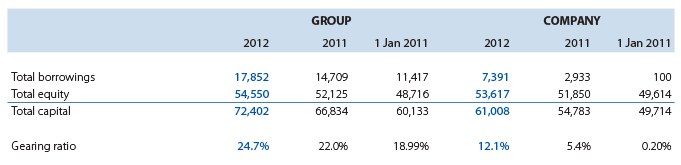
(v) New standards and interpretations not yet adopted
A number of new standards, amendments to standards and interpretations are effective for annual periods beginning after 1 January 2012, and have not been applied in preparing these consolidated financial statements. Those which may be relevant to the Group are set out below. The Group does not plan to adopt these standards early.
(i) SLFRS 9 Financial Instruments (2010), SLFRS 9 Financial Instruments (2009)
SLFRS 9 (2009) introduces new requirements for the classification and measurement of financial assets. Under SLFRS 9 (2009), financial assets are classified and measured based on the business model in which they are held and the characteristics of their contractual cash flows. SLFRS 9 (2010) introduces additions relating to financial liabilities. The IASB currently has an active project to make limited amendments to the classification and measurement requirements of SLFRS 9 and add new requirements to address the impairment of financial assets and hedge accounting.
SLFRS 9 (2010 and 2009) are effective for annual periods beginning on or after 1 January 2015 with early adoption permitted. The adoption of SLFRS 9 (2010) is expected to have an impact on the Group's financial assets, but not any impact on the Group's financial liabilities.
(ii) SLFRS 10 Consolidated Financial Statements, SLFRS 11 Joint Arrangements, SLFRS 12 Disclosure of Interests in Other Entities (2011)
SLFRS 10 introduces a single control model to determine whether an investee should be consolidated. As a result, the Group may need to change its consolidation conclusion in respect of its investees, which may lead to changes in the current accounting for these investees.
Under SLFRS 11, the structure of the joint arrangement, although still an important consideration, is no longer the main factor in determining the type of joint arrangement and therefore the subsequent accounting.
SLFRS 12 brings together into a single standard all the disclosure requirements about an entity's interests in subsidiaries, joint arrangements, associates and unconsolidated structured entities. The Group is currently assessing the disclosure requirements for interests in subsidiaries, interests in joint arrangements and associates and unconsolidated structured entities in comparison with the existing disclosures. SLFRS 12 requires the disclosure of information about the nature, risks and financial effects of these interests.
These standard's effective dates have been deferred for after 1 January 2013 with early adoption permitted.
(iii) SLFRS 13 Fair Value Measurement (2011)
SLFRS 13 provides a single source of guidance on how fair value is measured, and replaces the fair value measurement guidance that is currently dispersed throughout SLFRS. Subject to limited exceptions, SLFRS 13 is applied when fair value measurements or disclosures are required or permitted by other SLFRSs. The Group is currently reviewing its methodologies in determining fair values (see Note 5). SLFRS 13 is effective for annual periods beginning on or after 1 January 2013 with early adoption permitted.
4. OPERATING SEGMENTS
The Group has three reportable segments, as described below, which are the Group's strategic divisions. The strategic divisions offer different products and services, and are managed separately because they require different technology and marketing strategies. For each of the strategic divisions, the Board of Directors (the Chief Operating Decision Maker - CODM) reviews internal management reports on at least quarterly basis. The following summary describes the operations in each of the Group's reportable segments.
- Fixed Telephony operations includes supply of fixed telecommunication services.
- Mobile Telephony operations includes supply of mobile telecommunication services.
- Other Segment operations includes publication & support services. None of these segments meet the quantitative thresholds for determining reportable Segments in 2012 and 2011.
Information regarding the results of each reportable segment is included below. Performance is measured based on segment profit before tax, as included in the internal management reports that are reviewed by the Board of Directors (BOD). Segment profit is used to measure performance as management believes that such information is the most relevant in evaluating the results of certain segments relative to other entities that operate within these industries.
Information about reportable segments.
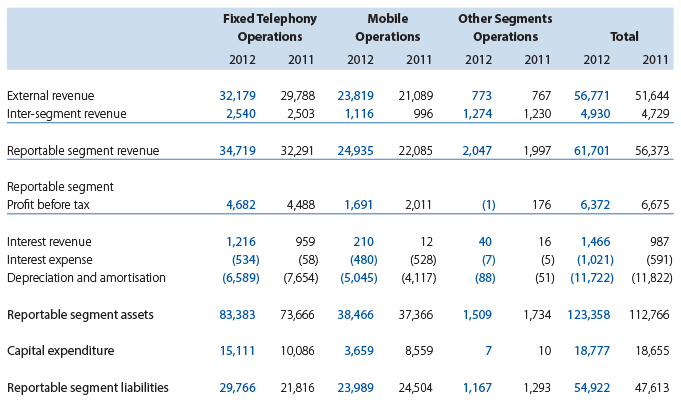
Reconciliations of reportable segment revenues, profit or loss, assets and liabilities, and other material items
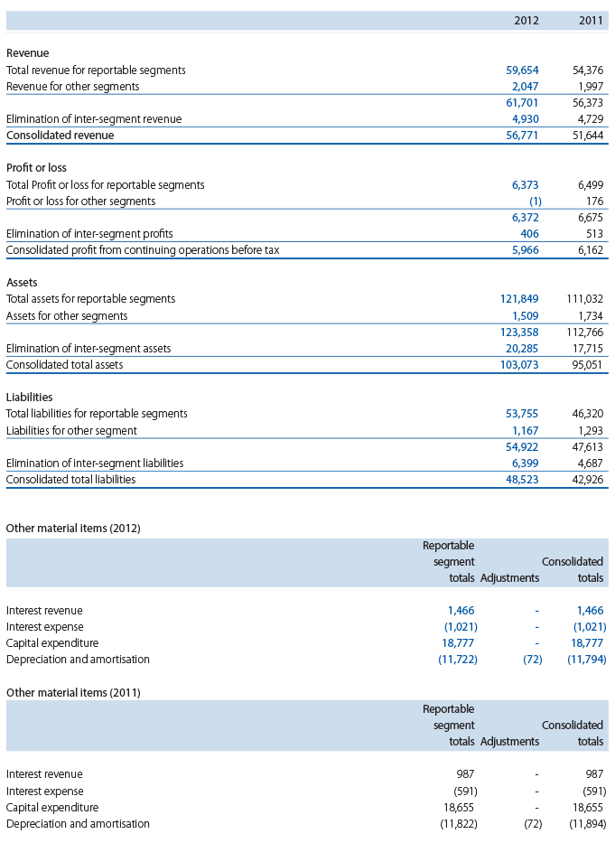
5 REVENUE
The significant categories under which revenue is recognised are as follows:
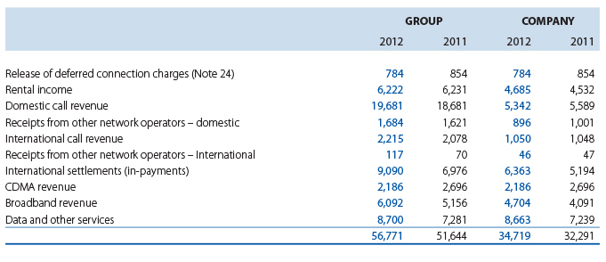
6 OPERATING COSTS
The following items have been included in arriving at Operating profit before depreciation and amortisation:
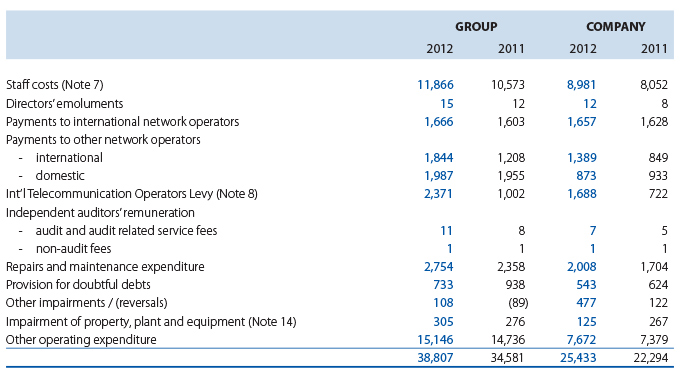
7 STAFF COSTS
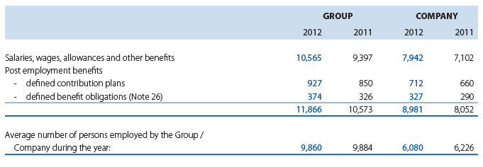
8 REFUNDS ON TELECOMMUNICATION DEVELOPMENT CHARGE (TDC)
In accordance with the Finance Act No. 11 of 2004, all Telecommunication Gateway Operators are required to pay a levy defined as the Telecommunication Development Charge (TDC) to the Government of Sri Lanka, based on international call minutes terminated in the country. This levy has made effective from 03rd March, 2003 where initially the levy was defined in such a way that Operators were allowed to claim the 2/3rd of the TDC against the costs of network development charges.
First revision to this regulation was introduced with effect from 15th July, 2010 with a TDC rate change from USD cents 3.80 to USD cents 1.50. Through the same revision the disbursement process was removed from the regulation. The revised rates prevailed until such time the rate was again revised to USD cents 3.0 per minute with effect from January, 2012 in accordance with the Budget Proposal for 2012.
The total amount of the levy payable by the Group and Company for the period from 1 January 2012 to 31 December 2012 was estimated at Rs.2.371 million (2011-Rs.1,002 million) and Rs.1,688 million (2011- Rs.722 million) respectively and has been recognised as expenses in the current financial year. The corresponding liability, net of payments, has been recognised in the statement of financial position.
9 INTEREST EXPENSES AND FINANCE COST
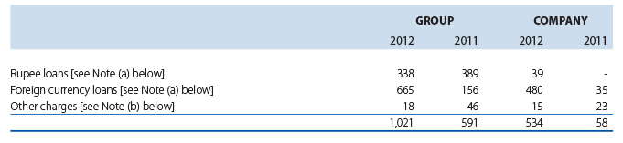
(a) Interest cost of the company Rs.519 million (2011 - Rs.35 million) relates to the rupee loan and USD syndicate loan obtained in 2011. Interest cost of group related to rupee loans, syndicate loans and overdraft facilities from local banks.
(b) Other charges mainly include interest cost of finance leases.
9.a Foreign Exchange (Loss) /gain Contd.
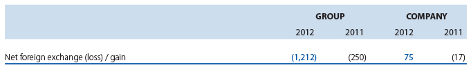
(a) Foreign currency (loss) or gain of the Company includes,
i. Exchange gain of Rs.1,101 million (2011- Rs.98 million) arising from revaluation of the fixed deposits and bank balances denominated in USD
ii. Exchange gain of Rs.5 million on payment to foreign suppliers (2011 loss - Rs.30 million)
iii. Exchange loss of Rs.1,031 million (2011- Rs.85 million) arising from revaluation of USD syndicate loan
(b) Foreign currency (loss) or gain of the Group includes,
i. Exchange gain of Rs.1,339 million (2011- Rs.136 million) arising from revaluation of the fixed deposits and bank balances denominated in USD
ii. Exchange loss of Rs.1,028 million on payment to foreign suppliers (2011- Rs.220 million)
iii. Exchange loss of Rs.1,523 million (2011- Rs.147 million) arising from revaluation of USD syndicate loan and other term loans.
10 INTEREST INCOME
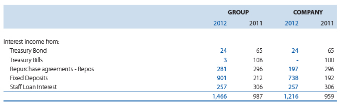
The interest income on bank deposits and Government Securities reflect the prevailing rates on the date of respective investments.
(a) The weighted average interest rates on bank deposits in LKR and USD were 12.80% (2011 - 7.84%) and 5.42 % (2011 - 4.64%) respectively.
(b) The weighted average interest rates on investments in Government Securities were 9.81% (2011 - 7.21%)
(c) The average market interest rates on staff loans are between 11.5 % and 20% (2011 - 11.5% and 13.5%).
(d) According to the section 137 of the Inland Revenue Act No 10. of 2006, any person who derives income from the secondary market transactions in government securites is entitled to a notional tax credit in relation to the tax payable by such person. Notional tax credit would be determined by grossing up of the income from the secondary market transactions to an amount equal to 1/9 of same and credit to be afforded for a like sum. Accordingly , Company has accounted for Rs.23 million as notional tax credit for the year 2012. (2011 Rs.49 million)
11 INCOME TAX EXPENSES
Tax recognised in profit or loss
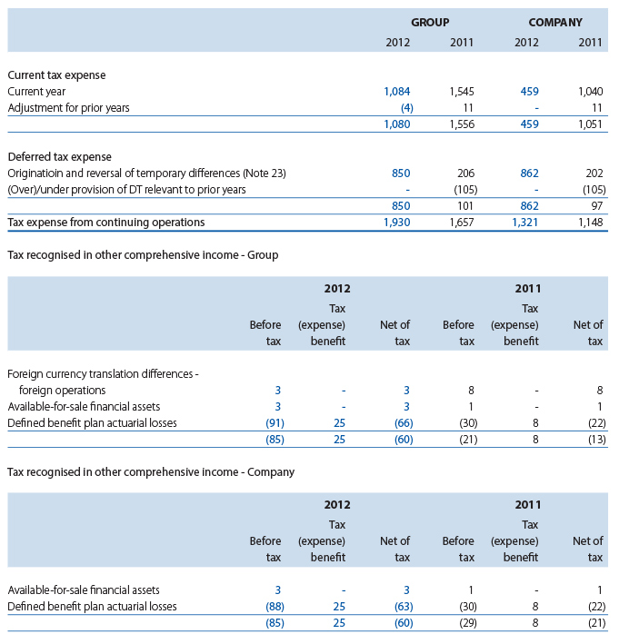
Reconciliation of effective tax rate
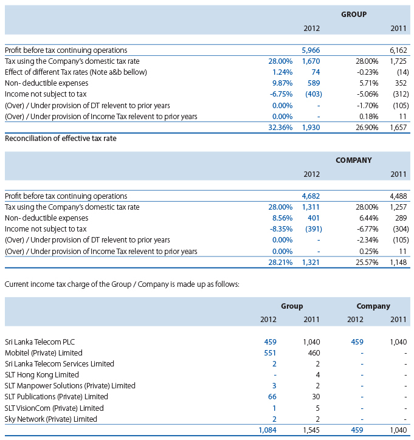
(a) Pursuant to agreements dated 15 January 1993 and 26 February 2001 entered into with the Board of Investment of Sri Lanka under Section 17 of the Board of Investment Act No. 4 of 1978, 15 years tax exemption period granted to Mobitel (Private) Limited expired on 30 June 2009 and as per the agreement, Mobitel (Private) Limited opted for the turnover based tax option in which 2% was charged on the turnover for a further period of 15 years commencing from 1 July 2009.
(b) As per the amendment to Inland Revenue Act no 22 of 2011, for the year of assessement 2012/2013, SLT Manpower Solutions (Pvt) Limited is liable for income taxes at the rate of 10 % on their taxable income. SLT (Hong Kong) Limited is liable for income tax at the rate of 16.5%.
(C) As per the agreement with the Board of Investement of Sri Lanka (BOI) dated 19 November 2009 under Section 17 of BOI Act No.4 of 1978 the Sky Network (Private) Ltd is exempt from income tax for a period of 6 years. For the above purpose the year of assessment shall be reckoned from the year in which the Company commences to make profits or any year of assessment not later than two years reckoned from the date of on which the Company commences commercial operation, whichever is earlier as may be specified in a certificate issued by the Board. In view of the above the Company is not liable to income tax on business profit. The Current tax wholly consists of tax on interest income.
12 EARNINGS PER SHARE
The basic earnings per share is calculated by dividing the net profit attributable to owners by the weighted average number of ordinary shares in issue during the year.
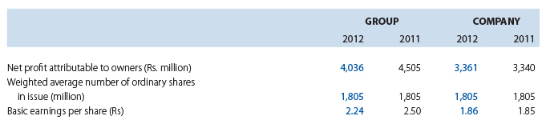
13 DIVIDENDS
In respect of 2011, a first and final dividend of Rs.0.85 (2010 - Rs.0.60) per share amounting to a Rs.1,534,131,000 (2010 - Rs.1,082,916,000) was paid during the current year.
The Board has recommended a first and final dividend of Rs.0.85 per share amounting to Rs.1,534,131,000 for the year ended 31 December 2012. This is to be approved by the shareholders at the Annual General Meeting to be held on 24th April 2013. As stipulated by LKAS - 10 - Events After the Reporting Date, the proposed dividend is not recognised as a liability as at 31 December 2012.
14 PROPERTY, PLANT AND EQUIPMENT
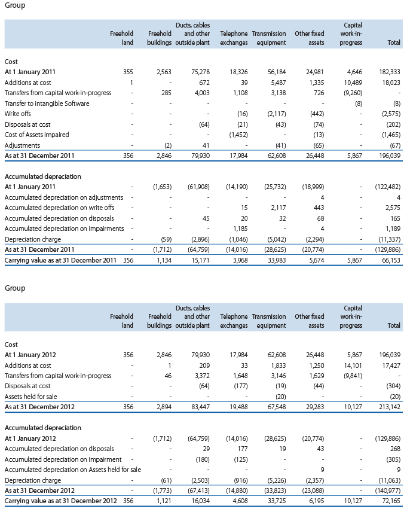
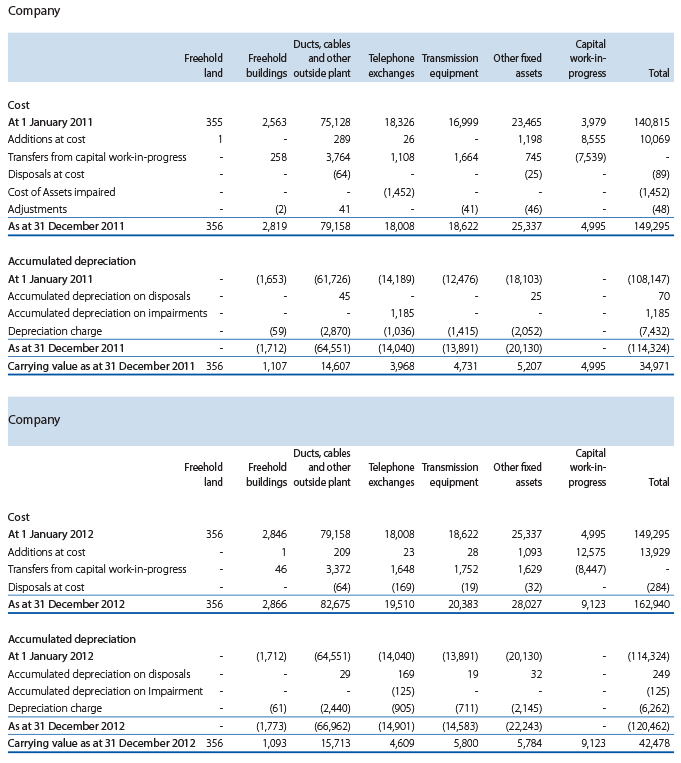
(a) On 1 September 1991, the Department of Telecommunications (DoT) transferred its entire telecommunications business and related assets and liabilities to SLT. A valuation of the assets and liabilities transferred to SLT was performed by the Government of Sri Lanka. The net amount of those assets and liabilities represents SLT's Contributed Capital on incorporation, and the value of property, plant and equipment as determined by the Government of Sri Lanka valuers was used as the opening cost of fixed assets on 1 September 1991 in the first statutory accounts of SLT. Further, SLT was converted into a public limited company,
Sri Lanka Telecom Limited (SLTL), on 25 September 1996 and on that date, all of the business and the related assets and liabilities of SLT were transferred to SLTL as part of the privatisation process.
(b) The cost of fully depreciated assets still in use in the Company as at 31 December 2012 was Rs.92,822 million (2011 - Rs.70,521 million). The cost of fully depreciated assets still in use in the Group as at 31 December 2012 was Rs.93,476 million (2011 - Rs.70,821 million).
(c) No assets have been mortgaged or pledged as security for borrowings of the Company. However, Mobitel (Private) Limited, a subsidiary of the Company, has pledged its assets at a value of Rs.9.7. billion as at 31 December 2012 (2011- Rs.9.7 billion) for its bank borrowings [Note 22 (k)].
(d) The Directors believe that the Company has freehold title to the land and buildings transferred on incorporation (conversion of SLT into a public limited company on 25 September 1996), although the vesting orders specifying all the demarcations and extents of such land and buildings could not be traced. The Company has initiated action to transfer legal title documentations.
(e) The property, plant and equipment is not insured except for third party motor vehicle insurance. An insurance reserve has been created together with a sinking fund investment to meet any potential losses with regard to uninsured property, plant and equipment. At the statement of financial position date, the insurance reserve amounted to Rs.435 million (2011 - Rs.387 million) (Note 27).
(f) Impairment of assets mainly consist of the carrying value of switches Rs.125 million that were impaired as a result of implementation of Next Generation Network (NGN) phase 3b (2011 - Rs.267 million).
(g) Additions include assets costing Rs.Nil (2011 - Rs.57 million) obtained under finance leases (where the Company is the lessee) and the additions of the Group includes assets costing Rs.Nil obtained under finance leases (2011 - Rs.82 million) where the Group is the lessee.
(h) The property, plant and equipment includes motor vehicles acquired under finance leases, the net book value of which is made up as follows:
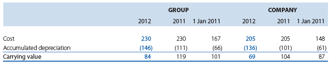
(i) Property, plant and equipment include submarine cables which are jointly controlled. The total cost and accumulated depreciation of all cables under this category as follows;
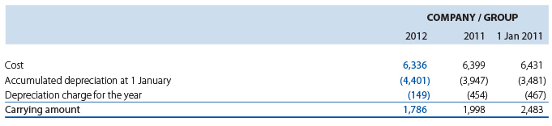
15 INTANGIBLE ASSETS
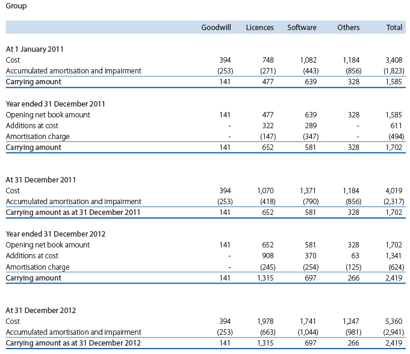
The goodwill in Group consists of goodwill arising on acquisition of Mobitel (Private) Limited.
Impairment test for goodwill
Goodwill is allocated to the Group's Cash-Generating Units (CGUs). A summary of the goodwill allocation is presented below:
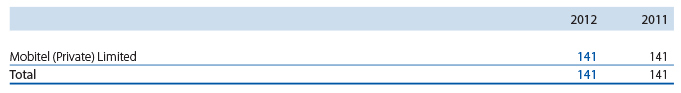
The recoverable amount of a CGU is determined based on value-in-use calculations. These calculations use pre - tax cash flow projections based on financial budgets approved by management covering a five-year period. Cash flows beyond the five-year period are extrapolated using the estimated growth rates stated below. The growth rate does not exceed the long-term average growth rate for the business in which the CGU operates.
The key assumptions used for value-in-use calculations are as follows:
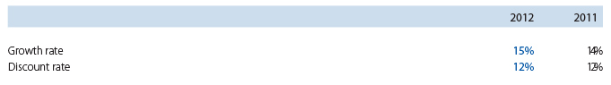
Management determined budgeted gross margin based on past performance and its expectations of market development. The weighted average growth rates used are consistent with the forecasts included in industry reports. The discount rates used are pre-tax and reflect specific risks relating to the relevant operating segments. No impairment charge has been recognised for the year ended 31 December 2012 for the above CGU (2011 - Rs.Nil).
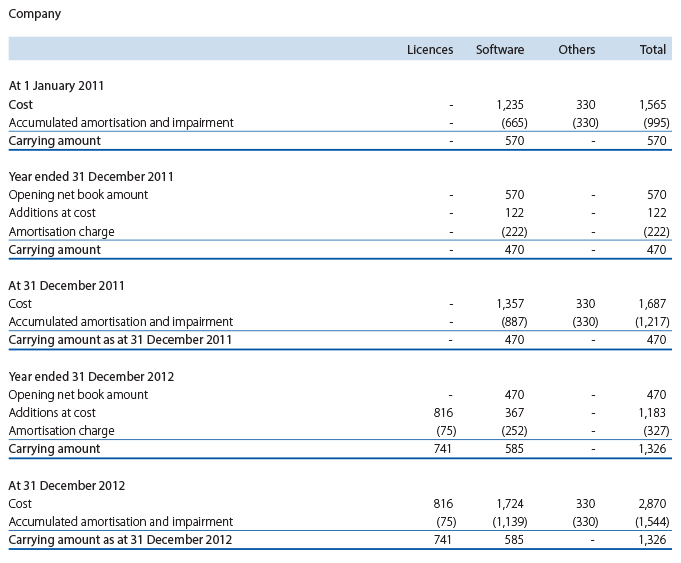
15.a Financial prepayments
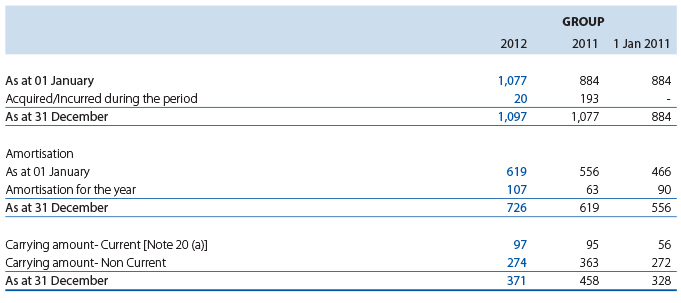
Financial charges for the guarantee issued by The Swedish Export Credit Guarantee Board (EKN) for SCB loan, insurance premium for the guarantee issued by China Export and Credit Insurance Corporation for HSBC loan and other financial prepayments.
16 INVESTMENTS IN SUBSIDIARIES
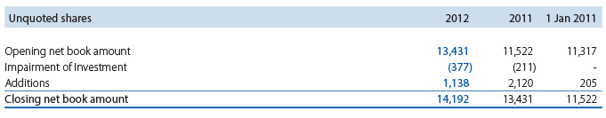
Details of the subsidiary companies in which the Company had control as at 31 December are set out below:
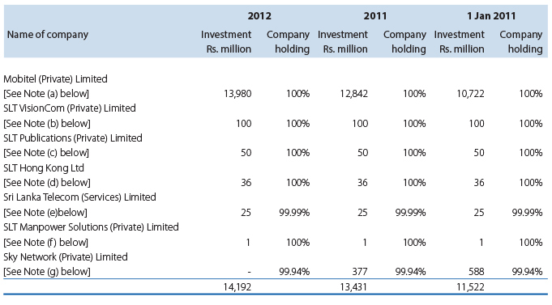
The directors believe that the fair value of each of the companies listed above do not differ significantly from their
(a) The Company owns 1,320,013,240 shares representing 100% of the entire Ordinary Share capital of Mobitel (Private) Limited, at 31 December 2012.
Additions during the year, comprise the capital infusion of Rs.1,138 million in ordinary shares with a value of Rs.10 per share of Mobitel (Private) Limited.
At 31 December 2012, preference dividends amounting to Rs.980 million were in arrears (2011 - Rs.1,403 million). No accrual has been made in the Company's financial statements as the Board of Directors has decided to waive off the right to receive the same.
(b) This investment in subsidiary company consists of 10,000,000 shares representing the entire stated capital of SLT VisionCom (Private) Limited.
(c) This investment in subsidiary company consists of 5,000,000 shares representing the entire stated capital of SLT Publications (Private) Limited.
(d) This investment in subsidiary company consists of 2,500,000 shares representing the entire stated capital of SLT (Hong Kong) Limited incorporated in Hong Kong.
(e) This investment in subsidiary company consists of 2,500,000 shares representing 99.99 % of stated capital of Sri Lanka Telecom (Services) Limited.
(f) This investment in subsidiary company consists of 50,000 shares representing the entire stated capital of SLT Manpower Solutions (Private) Limited.
(g) This investment in subsidiary company consists of 42,071,251 shares representing a 99.94% holding of the issued stated capital and 6,000,000 12% cumulative and redeemable preference shares of Sky Network (Private) Limited.
At 31 December 2012, preference dividends amounting to Rs.30 million (2011 - Rs.24 million) has not been recognised in the financial statements.
All the subsidiaries except for Mobitel (Private) Limited and SLT (Hong Kong) Limited are audited by KPMG.
17 OTHER INVESTMENTS
Non Current Investments
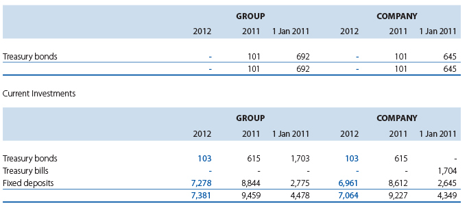
All government securities are classified as available for sale and measured at fair value and fixed deposits are classified as loans and receivables and measured at amortised cost.
Treasury bond with a carring value of Rs.103 million (2011 - Rs.101 million and 2010 - Rs.Nil) and fixed deposits with a carrying value of Rs.342 million (2011 - Rs.290 million and 2010 - Rs.359 million) are resticted at bank.
Interest rates of other investments are as follows:
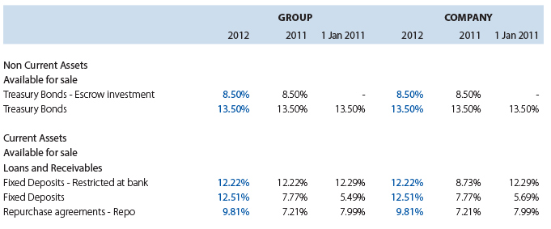
The Group's exposure to credit and market risk and fair value information related to other investment are disclosed in Note No. 30
18 OTHER RECEIVABLES
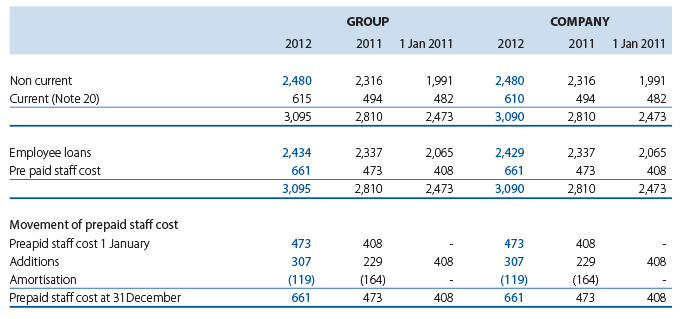
The Group provides loans to employees at concession rates. These employee loans are fair valued at initial recognition using level 2 inputs by discounting expected future cash flows using market related rates for the similar loans.
The difference between the cost and fair value of employee loans is recognised as prepaid staff cost. The employee loans are classified as loans and receivables and subsequently measured at amortised cost. Empolyee loans are repayable in mothly installments over the loan period not exceeding eight years. The amount shown as other receivables represent staff loan installment falling due after 1 January 2014. No loans were given to directors of the Company.
19 INVENTORIES
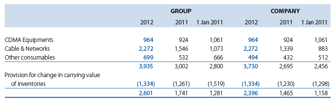
(a) Inventories consist of trading and capital inventory of which include telecommunication hardware, CDMA handsets, consumables and office stationery. Inventory is stated net of provisions for slow-moving and obsolete items.
20 TRADE AND OTHER RECEIVABLES
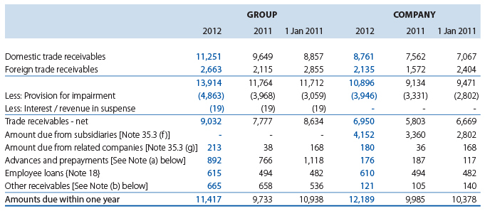
(a) Advances and prepayments of the Company mainly consist of advances and 2010 - Rs.8 million), payments for software maintenance of Rs.120 million (2011 - Rs.136 million and 2010 - Rs.72 million) and Purchase advance of Rs.15 million (2011-Rs.11 million and 2010 - Rs.2 million.) Advances and prepayments of the Group mainly consist of advances on Building rent of Rs.129 million (2011 - Rs.134 million and 2010 - Rs.114 million) and payments for software maintenance of Rs.352 million (2011 - Rs.368 million and 2010 - Rs.72 million) and prepayment for advertising hordings Rs.15 million (2011- 70 million and 2010 - Rs.312 million) and current portion of financial prepayment Rs.97 million (2011- Rs.95 million and 2010 - Rs.56 million)
on Building rent of Rs.12 million (2011 - Rs.16 million
(b) Other receivables of the Company mainly consist of refundable deposits of Rs.98 million (2011 - Rs.98 million and 2010 - Rs.85 million) and dishonoured cheques of Rs.3 million (2011 - Rs.2 million and 2010 - Rs.3 million.) Other receivables of the Group mainly consist of refundable deposits of Rs.179 million (2011- Rs.176 million and 2010 - Rs.162 million) VAT receivable of Rs.Nil (2011 - Rs.52 million and 2010 - Rs.181 million), receivables from sales agents Rs.85 million (2011-Rs.97 million and 2010 - Rs.101 million) site rentals receivables from other operators Rs.304 million (2011-Rs.287 million and 2010 - Rs.226 million)
21 CASH AND CASH EQUIVALENTS
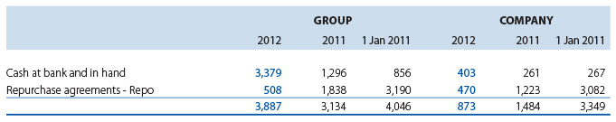
21 (a) For cash flow purpose:
Cash and cash equivalents
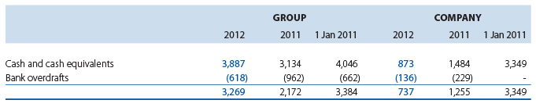
22 BORROWINGS
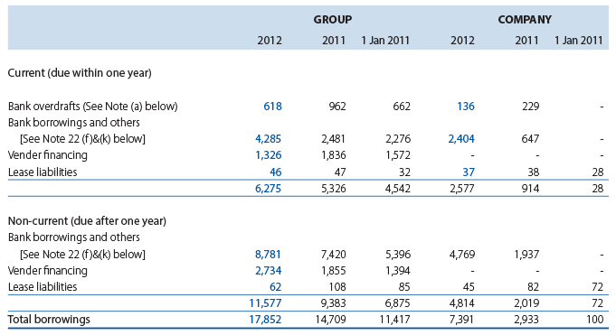
(a) Although bank overdrafts are reflected in the Company, no bank accounts are overdrawn in real terms.
(b) The interest rate exposure of the borrowings of the Group and Company are as follows:
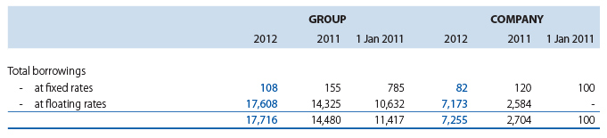
The currency exposure of the borrowings of the Group and the Company at the statement of financial position date was as follows:
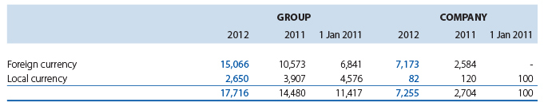
Borrowings (Bank overdraft) of Rs.136 million (2011 - Rs.229 million) reflected in the Company & Group was not included under either in interest rate exposure nor in currency exposure since same is not interest liable as bank accounts are not overdrawn in real terms.
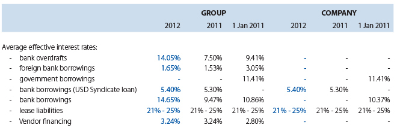
(c) Effective interest rates of the Company and the Group are as follows:
(d) Maturity analysis of the Company and the Group is as follows:
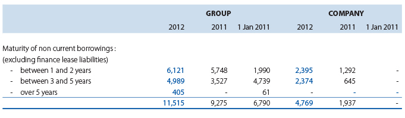
(e) Analysis of the finance lease liabilities of the Company and the Group is as follows:
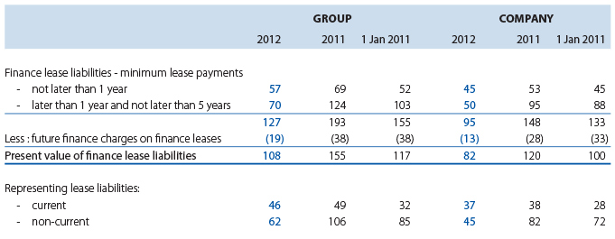
(f) During the year, company drew down the 2nd and final tranche of USD syndicate loan USD 52.5 million (equivelent to LKR 5,982 million). The total loan amount of syndicate loan was USD 75.0 million.
(g) The loan covenants include submission of audited financial statements to the lenders within specified periods from the financial year end, and to maintain adequate accounting records in accordance with generally accepted accounting principles.
(h) The Directors believe that the Company and the Group will have sufficient funds available to meet its present loan commitments.
(i) Lease liabilities of the Company and the Group are effectively
(j) Bank borrowings and bank overdrafts of Mobitel (Private) Limited, a subsidiary of the Company, are secured, inter alia, by corporate guarantees given by the Company.
(k) Bank borrowings of Mobitel (Private) Limited are secured by a pledge over its property, plant and equipment at a value of Rs.9.7 billion [See Note 14 (c)]
(l) Mobitel (Private) Limited has borrowed Rs.2,241 million during the year for the purpose of Capital Expansion Projects.
23 DEFERRED INCOME TAX
Recognised deferred income tax (assets) / liabilities
Deferred income tax (assets) and liabilities are calculated on all taxable and deductible temporary differences arising from differences between accounting bases and tax bases of assets and liabilities. Deferred income tax is provided under the liability method using a principal tax rate of 28% (for the year 2011 - 28%).
The movement in the deferred income tax account is as follows:
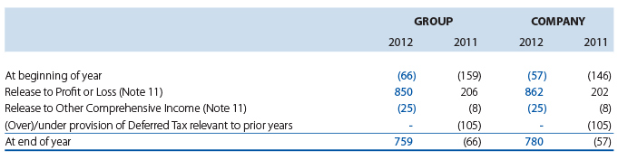
The amount shown in the statement of financial position represent the following.
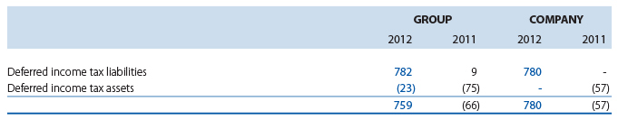
The taxable and deductible temporary differences mainly arise from property, plant and equipment, deferred income, provision for defined benefit obligations and other provisions.
The movement in deferred income tax assets and liabilities of the Group during the year, without taking into consideration the off-setting of balances within the same tax jurisdiction, is as follows:
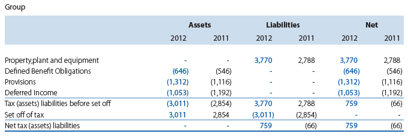
Unrecognised deferred income tax (assets) and liabilities
Deferred income tax assets are recognised for tax losses carry-forward to the extent that the realisation of the related tax benefit through future taxable profits is probable. Deferred Tax assets have not been recognised in respect of these items because it is not probable that future taxable profit will be available against which the Group can utilise the benifit there from.The Group did not recognise deferred tax assets in respect of tax losses of subsidiaries amounting to Rs.207 million (2011 - Rs.259 million and 2010 - Rs.285 million) that can be carried forward against future taxable income.
The adjusted tax losses available to carry forward as at 31 December 2012 are as follows:
24 DEFERRED INCOME
Deferred connection charges of the Company represents the connection charges relating to PSTN network, net of amounts amortised to the statement of comprehensive income. The connection charges are deferred over a period of 15 years as stated in Accounting Policy p(v). The deferred Indefesible Right of Use (IRU) sales of the Company includes the revenue arising on sale of SEA-ME-WE 4 cable capacity which is recognised over the lease period of 15 years. Release of Backhauling charges represent the revenue arising from lease of SEA-ME-WE 3 cable capacity. Deferred Pre-paid card revenue in company represents un- used CDMA and SLT Passport cards. In addition, the deferred income of the Group mainly represents un-used pre-paid card revenue and refund of Telecommunication Development Charges (TDC) received in 2009 from Telecommunication Regulatory Commission in connection with the cost of network rollout by Mobitel (Private) Limited.
25 TRADE AND OTHER PAYABLES
(a) Capital expenditure payables of the Company mainly consist of contractors' payable & retention of Rs.5,676 million Rs.2,747 million and 2010 - Rs.748 million) and advances on network restoration after road works of Rs.676 million (2011- Rs.531 million and 2010 - Rs.382 million). Capital expenditure payables of the Group mainly consist of contractors' payable of Rs.8,237 million (2011 - Rs.5,933 million and 2010 - Rs.7,786 million) and advances on network restoration after road works of Rs.676 million (2011 - Rs.531 million and 2010 - Rs.382 million.)
(b) Social security and other taxes of the Company mainly consist of and Telecommunication Levy (TL) of Rs.379 million (2011 - Rs.356 million and 2010 - Rs.Nil), Cess Rs.59 million (2011-Rs.66 million and 2010 - Rs.Nil), IDD Levy of Rs.40 million (2011-Rs.27 million and 2010 - Rs.Nil), EPF payable of Rs.80 million (2011 - Rs.76 million and 2010 - Rs.71 million). Social security and other taxes of the Group mainly consist of Telecommunication Levy (TL) of Rs.712 million (2011- Rs.649 million and 2010 - Rs.Nil), Cess of Rs.112 million (2011 - Rs.114 million and 2010 - Rs.Nil). IDD Levy payable of Rs.64 million (2011- Rs.46 million and 2010 - Rs.Nil)
(c) Other payables of the Company mainly consist of dividend payable to the Government of Sri Lanka of Rs.244 million (2011 - Rs.249 million and 2010- Rs.249 million), payable for unpaid supplies of Rs.2,281 million (2011 - Rs.963 million and 2010- Rs.462 million), International Telecommunication Operators' Levy payable of Rs.305 million (2011 - Rs.3,125 million and 2010- Rs.4,508 million) and accrued expenses and other payables of Rs.1,194 million (2011 - Rs.809 million and 2010- Rs.686 million). Other payables of the Group mainly consist of dividend payable to the Government of Sri Lanka of Rs.244 million (2011 - Rs.249 million and 2010- Rs.249 million), payable for unpaid supplies of Rs.2,281 million (2011 - Rs.963 million and 2010- Rs.462 million), International Telecommunication Operators' Levy payable (without netting off TDC refunds)of Rs.330 million (2011 - Rs.3,150 million and 2010- Rs.4,660 million), and accrued expenses and other payables of Rs.3,122 million (2011 - Rs.1,931 million and 2010- Rs.1,415 million).
26 EMPLOYEE BENEFITS
(1) Movement in present value of employee benefit liabilities
(2) The expenses recognised in the statement of comprehensive income
The expenses are recognised under staff cost in statement of comprehensive income
(3) As stated in Accounting Policy 3. (j) (ii) s at 31 December 2012, an actuarial valuation was carried out by an independent actuary.
The principal actuarial assumptions used were as follows:
In addition to above, demographic assumptions such as mortality, withdrawal, retirement age were considered for the actuarial valuation. In 2012, 1967/70 Mortality Table issued by the Institute of Actuaries London (2011 - 1967/70 Mortality Table and 2010 - 1967/70 mortality table) was taken as the base for the valuation.
The provisions for defined obligations of Sri Lanka Telecom PLC, SLT Manpower Solutions (Private) Ltd and Mobitel (Private) Limited are actuarially valued by Messrs Actuarial and Management Consultants (Private) Limited and Piyal S Goonetilake respectively. The employee benefit liability of all other comapnies in the Group are based on gratuity formula in Appendix E of LKAS 19.
The provision for defined benefit obligations is not externally funded.
27 INSURANCE RESERVES
As stated in Accounting Policy 3.(r) the Company transfers annually from the retained earnings an amount equal to 0.1% of additions to property, plant and equipment to an insurance reserve. An equal amount is invested in a sinking fund to meet any funding requirements for potential losses from uninsured property, plant and equipment.
Management regularly monitors the charges made against the insurance reserve and the adequacy of the provision made.
28 GRANT
(a) Grant in Company and Group consists of Exchange equipment received from Alcatel CIT France in 2005.
29 STATED CAPITAL

30 FINANCIAL RISK MANAGEMENT
Overview
The Group has exposure to the following risks from its use of financial instruments:
- Credit risk
-
- Liquidity risk
-
- Market risk
-
This note presents information about the Group's exposure to each of the above risks, the Group's objectives, policies and processes for measuring and managing risk, and the Group's management of capital. Further quantitative disclosures are included throughout these consolidated financial statements.
Risk Management Framework
The Board of Directors has overall responsibility for the establishment and oversight of the Group's risk management framework.
The Group's risk management processes are established to identify and analyse the risks faced by the Group, to set appropriate risk limits and controls and to monitor risks and adherence to limits. Risk management systems are reviewed regularly to reflect changes in market conditions and the Group's activities.
The Audit Committees oversee how management monitors compliance with the Group's risk management processes/ guidelines and procedures and reviews the adequacy of the risk management framework in relation to the risks. The Audit Committees are assisted in its oversight role by Internal Audit. Internal Audit undertakes both regular and ad hoc reviews of risk management controls and procedures, the results of which are reported to the Audit Committee
30. a Credit Risk
Credit risk is the risk of financial loss to the Group if a customer or counter party to a financial instrument fails to meet its contractual obligation, and arise principally from the Group's receivables from customers
Carrying amount of financial assets represents the maximum credit exposure The maximum exposure to credit risk at the reporting date was as follows;
Trade and other receivables
The Group has a very well established credit policy for both International Interconnect customers and Domestic customers to minimise credit risk. A separate committee has been established to evaluate and recommend the credit worthiness of the International Interconnect customers. Further prepaid sales are used as a means of mitigating credit risk.
Domestic service is offered to a new customer, only after scrutinising the internal blacklisted data base. The Group has a well- established credit control policy and process to minimise credit risk. Customers are categorised according to the segments and credit limits have been fixed as per their average monthly bill value. Customer usage and bill payments are monitored as per the credit limit. Credit limit will be periodically revised as per the past monthly bill values. High risk voice customers are subjected
to automated disconnection when they reach the threshold limits. Credit control actions and recovery actions are taken for overdue customers and defaulted customers to minimise credit risk. High revenue generating customers including corporate customers are monitored individually.
30 FINANCIAL RISK MANAGEMENT CONTD.
Impairment losses
The aging of trade and other receivables at the reporting date that were impaired are as follows

The movement in the provision for impairment in respect of trade and other receivables during the year was as follows
-
- Collective impairment
- Balance 1/1/2011
- 3,059
- Impairment losses recognised
- 995
- Write offs
- (86)
- Balance 31/12/2011
- 3,968
- Impairment losses recognised
- 895
- Write offs
- -
- Balance 31/12/2012
- 4,863
Other investments
The Group limits its exposure to credit risk by investing only in government debt securities, repos and in short term deposits with selected bankers with Board approval.
Guarantees
Sri Lanka Telecom PLC provides corporate gurantee to its subsidiaries only.
30. b Liquidity Risk
Liquidity risk is the risk that the Group will encounter difficulty in meeting the obligations associated with its financial liabilities that are settled by delivering cash or another financial asset. The Group's approach to managing liquidity is to ensure, as far as possible, that it will always have sufficient liquidity to meet its liabilities when due, under both normal and stressed conditions, without incurring unacceptable losses or risking damage to the Group's reputation.
The Group ensures its liquidity is maintained by investing in short, medium and long-term financial instruments to support operational and other funding requirements. The Group determines its liquidity requirements by the use of both short and long-term cash forecasts. These forecasts are supplemented by a financial headroom analysis which is used to assess funding adequacy for at least a 12-month period and the same is reviewed on an annual basis.
Short and medium-term requirements are regularly reviewed and managed by the treasury division
Repayment of the Foreign Currency borrowings of the Company has been arranged in semiannual installments avoiding any unforeseen risk on liquidity compared to a bullet repayment.
The following are the contractual maturities of financial liabilities, including estimated interest.
The maturity analysis of liabilities - Group
 The maturity analysis of liabilities - Company
30.c Market Risk
The maturity analysis of liabilities - Company
30.c Market Risk
Market risk is the risk that changes in market prices, such as foreign exchange rates, interest rates and equity prices which will affect the Group's income or the value of its holdings of financial instruments. The objective of market risk management is to manage and control market risk exposures within acceptable parameters, while optimising the return.
Currency Risk
The Group is exposed to currency risk on services provided, services received and borrowings that are denominated in a currency other than the Sri Lankan rupees (LKR) The Group manages its currency risk by a natural hedging mechanism to a certain extent by matching currency outflows for repayments of foreign currency loans and services with currency inflows for services settled in foreign currencies.
The summary of quantitative data about the Group's exposure to foreign currency was as follows:
Interest Rate Risk
Interest rate risk mainly arises as a result of Group having interest sensitive assets and liabilities, which are directly, impacted by changes in the interest rates. The Group's borrowings and investments are maintained in a mix of fixed and variable interest rate instruments and periodical maturity gap analysis is carried out to take timely action and to mitigate possible adverse impact due to volatility of the interest rates.
Foreign currence borrowing at variable rate of interest or variable interest rate with a cap minimising any adverse impact due to an upward movement of USD interest rate in the market
Short-term interest rate management is delegated to the treasury operations while long-term interest rate management decisions require approval from the board of directors
31 CASH GENERATED FROM OPERATIONS
Reconciliation of profit before tax to cash generated from operations:
32 CAPITAL COMMITMENTS
The Group and the Company have purchase commitments in the ordinary course of business as at 31 December 2012 as follows:
Operating Lease commitments
The future minimum lease payments under operating leases are as follows:
Other financial commitments
Except for any regular maintenance contracts entered into with third parties in the normal course of business, there are no other material financial commitments that requires separate disclosure.
33 CONTINGENCIES
a) Global Electroteks Limited has initiated legal action under High Court Case No. 20/2006 claiming damages of USD 12 million from SLT PLC for alleged unlawful disconnection of interconnection services. The Trial is proceeding. Next date 05 March 2013.
(c)SC (CHC) 31/2010 - Directories Lanka (Private) Limited (DLPL) Appeal Case filed by DLPL against SLT PLC, against the dismissal of CHC 2/2006 (3) by which DLPL claimed damages of Rs.250 million for alleged unfair competition with regrard to artwork on the cover page of Directory by SLT PLC. The case is proceeding. Court of Appeal to issue notice to SLT PLC to collect brief.
(d) Just In Time Holdings (Pvt.) Ltd (JIT) i is claming USD 4,738,846.57, as payments due to them from SLT under the contract with damages. Proceedings are concluded and award was delivered infavour of JIT on 30 March 2012 with damages, costs and legal interest. SLT PLC has received legal advice that it has sufficient legal grounds to challenge the arbitral award including damages ,costs and legal interest under the award.
SLT PLC is proceeding with an appeal against the award delivered based on these substantial legal arguments.Next date 13 March 2013.
(e) Rates & Taxes -DSP/00111/08, Application against the unreasonable increase of Assessment Tax of SLT Headquarters, to Rs.8,452,500.00 per Quarter from the year 2006. Legal action filed by SLT PLC against Colombo Municipal Council, against the arbitrary increase of assessment value of head quarters premises from 84 million to 96 million. The quarterly assessment tax increase from 2006 was Rs.7,350,000.00 to Rs.8,452,500.00
The case is proceeding.Next date of Arguments on 07 May 2013.
(f) WP/HCCA/COL/106/LA -Appeal made by Colombo Municipal Council against the stay order granted in favor of SLT PLC precluding CMC levying the aforementioned Assessment taxes from SLT PLC is pending in Court. The case is proceeding. Next date of Argument s on 15 may 2013.
(g)Case no. 4055/M in District Court Gampaha was filed against SLT PLC for alleged failure to reconnect the respective telephone facility. The order was given in favour of SLT PLC on 13 September 2012.
(h) Case no. CHC 506/2011/MR in Commercial High Court Colombo was filed by HS Communications Ltd against SLT & SLT VisionCom Ltd seeking judgment and declaration purporting that the agreement to acquire certain channels/content dated 27.12.2010 between HS Communication Ltd and SLT & SLT VisionCom Ltd are in iin force. Further claim of USD 324,000 as payments due to Defendants for alleged services provided and a sum of USD 162,000 per month from November 2011 are included under Petition of the case. Accordingly it was purported that SLT and SLT VisionCom Ltd are obliged to make payments for down linking/telecasting etc. according to the said agreement. This case is Fixed for Trial on 28.02.2013.
(i) 12/2008 CBCU, An Inquiry started by Sri Lanka Customs - A consignment of CDMA equipment were detained in October 2008 by the Customs Authority. Subsequently the equipment were cleared pending inquiry, based on a Cash deposit and Bank guarantee Submitted by SLT for the total value of Rs.122,189,514/-. Currently under this inquiry no further date has been given to SLT to proceed with the matter.
(j) A frequency fee amounting to Rs.300 million, payable to TRC by Sky Networks (Private) Limited which has not been recognised, pending negotiations with TRC regarding license conditions.
(k) Further, as stated in Note 8 to the accounts, Operators were allowed to claim the 2/3rd of the Telecommunication Development Charge (TDC) against the costs of network development charges. Company has retained 2/3 rd of TDC charge, awaiting the claims in respect of network development charges were determined by the TRC. However, TRC has intimated a surcharge on TDC retained by the Company on above, which is being discussed with TRC currently.
The Company has provided guarantees on behalf of its Subsidiaries for following credit and trade finance facilities.
(i) Facilities amounting to Rs.6,730 million (2011 - Rs.6,730 million) and USD 159.4 million (2011 - USD 132.9 million) for Mobitel (Private) Limited for the GSM rollout stage 2, 3, 4, 5 , 6.and 7
(ii) Facilities amounting to Rs.26 million (2011-Rs.26 million) for Sri Lanka Telecom (Services) Limited to obtain facilities for working Capital requirement.
(iii) Facilities amounting to Rs.112.8 million (2011- Rs.112.8 million) for Sky Network (Private) Limited to facilitate WIMAX turnkey solution project.
With regard to cases detailed above, pending the outcome of the appeals and hearings, no provisions have been recognised in the financial statements up to 31 December 2012.
In addition to the above referred cases, there are more issues in relation to claims by employees and third parties for damages. In the opinion of the Directors none of these actions are likely to result in a material liability to the Company and its subsidiaries.
34 COMPARATIVE
Adjustment of Rs.17 million have been made to the Group retained earnings, subsequent to the consolidation of group accounts in the prior year.
35 RELATED PARTY TRANSACTIONS
35.1 The Company had following transactions with its subsidiaries during the year under review:
(a) Mobitel (Private) Limited
The Company has provided guarantees on behalf of Mobitel for following loans and obligations.
Facilities amounting to Rs.6,730 million (2011 - Rs.6,730 million) and USD 159.40 million (2011 - USD 132.9 million) for Mobitel (Private) Limited for the GSM rollout stage 2, 3, 4, 5,6 and 7.
(b) SLT (Hong Kong) Limited
(c) SLT Publications (Private) Limited
(d) Sri Lanka Telecom (Services) Limited
The Company has provided guarantees on behalf of Sri Lanka Telecom (Services) Limited for following loans and obligations.
Facilities amounting to Rs.26 million (2011-Rs.26 million) for Sri Lanka Telecom (Services) Limited to obtain facilities for working capital requirements.
(e) SLT Manpower Solutions (Private) Limited
(f) SLT VisionCom (Private) Limited
(g) Sky Network (Private) Limited
The Company has provided guarantees on behalf of Sky Network (Private) Limited for following loans and obligations.
Facilities amounting to Rs.112.8 million (2011- Rs.112.8 million) for Sky Network (Private) Limited to facilitate WIMAX turnkey solution project.
(h) Fees for secondment of personnel and services provided to / by SLT PLC
35.2 Related party relationships
SLT Group Directors and their directorships in other companies where transactions were carried out with SLT and disclosed in Note 35.3.
 35.3 Transactions with other related parties
(a) Maxis Communications Berhad and its subsidiaries
(b) Upali Group of Companies
35.3 Transactions with other related parties
(a) Maxis Communications Berhad and its subsidiaries
(b) Upali Group of Companies
(Appointed as Chairman/Director from 20 May 2010)
(c) Nawaloka Group
(Appointed as a Director from 26 May 2010)
(d) Sri Lankan Airlines Limited
(e) Sri Lanka Cricket Board
(f) Outstanding balances arising from sale / purchase of services
(g) Outstanding balances arising from sale / purchase of services
(h) Government related key institutions
The Government of Sri Lanka holds 49.5% of the voting rights of the Company as at 31 December 2012 through the Secretary to the Treasury and those have significant influence over the financial and operating policies of the Company. Accordingly the Company has considered the Goverment of Sri Lanka as a related party according to LKAS 24 Related Party Disclosure.
During the year ended 31 December 2012, the Company has carried out transactions with the Government of Sri Lanka and other Government telated related entities in the ordinary couse of business.
The Company identified individually significant transaction with Key Government Related entities as given below;
(i) Revenue from provision of Telecommmunication services during the year ended 31 December 2012 amounted to Rs.3,206 million and credit receivables as at 31 December 2012 amounted to Rs.988 million.
(ii) Deposits,Repurchase agreements (Repo) and Borrowings of the Group at / from Government banks amounted to Rs.7,431 million and Rs.7,173 million respectively as at 31 December 2012.
(iii) Treasury bills and bonds of the Group as at 31 December 2012 amounted to Rs.103 million.
35.4 Transactions with key management personnel
Key management personnel comprise the directors & chief officers of the Company and the Group
Parties are considered to be related if one party has the ability to control the other party or exercise significant influence over the other party in making financial and operating decisions. A related party transaction takes place with a transfer of resources or obligations between related parties, regardless of whether a price is charged.
All transactions during the year and balances as at the statement of financial position date between the following companies have been eliminated in preparing the consolidated financial statements.
- Mobitel (Private) Limited
-
- Sri Lanka Telecom (Services) Limited
-
- SLT Hong Kong Ltd
-
- SLT Publications (Private) Limited
-
- SLT Manpower Solutions (Private) Limited
-
- SLT VisionCom (Private) Limited
-
- Sky Network (Private) Limited
-
Related party transactions disclosed above should be read in conjunction with Notes 16 and 35 to the financial statements.
36 GROUP REPORTING DATES
The annual financial statements of the subsidiaries, Sri Lanka Telecom (Services) Limited, SLT Hong Kong Ltd, SLT Publications (Private) Limited, Mobitel (Private) Limited, SLT Manpower Solutions (Private) Limited, SLT VisionCom (Private) Limited and Sky Network (Private) Limited are prepared at 31 December each year.
37 POST STATEMENT OF FINANCIAL POSITION EVENTS
No events have arisen since the statement of financial position date which would require adjustments to, or disclosure in, these consolidated financial statements.
38 EXPLANATION OF TRANSITION TO SLFRS
As stated in Note 2 (a) these are the Group's first consolidated financial statements prepared in accordance with SLFRSs.
The accounting policies set out in Note 3 have been applied in preparing the Financial Statements for the year ended 31 December 2012, the comparative information presented in these Financial Statements in the 31 December 2011 and in the preparation of opening SLFRS statement of Financial Position in 1 January 2011. (The Group's first date of transition)
The preparing its opening SLFRS Statement of Financial Position the Group has adjusted amounts reported previously in Financial Statements prepared in accordance with Sri Lanka previous GAAP. An explanation of how the transition from previous GAAP to SLFRS has affected the Group's Financial Position. Financial Performance and Cash Flows is set out in the following tables and notes that accompany the tables.